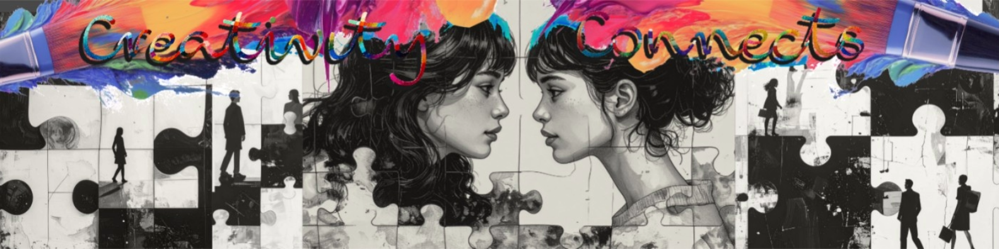

angelina repac
summary
As a dedicated and visionary student currently immersed in the vibrant discipline of Communication and Creative Industries at Western Sydney University, my academic journey is fueled by a profound commitment to fostering authentic connection, purposeful collaboration, and innovative storytelling within people-focused environments. I possess a relentless drive to translate complex, abstract concepts into tangible, deeply resonant narratives, consistently seeking to bridge the gap between creative ideation and highly impactful strategic communication. My approach to the discipline is defined by a meticulous attention to detail, a natural inclination toward collaborative synergy, and an unwavering enthusiasm for contributing fresh, insightful perspectives to rapidly evolving dynamic environments. By seamlessly synthesising advanced theoretical frameworks with practical, hands-on application, I strive to cultivate unique, memorable audience experiences that not only echo core community values but also challenge conventional media paradigms, ensuring that my professional and creative contributions are as socially meaningful as they are structurally and aesthetically compelling.
education
My academic trajectory serves as the foundational cornerstone of my professional identity, marked by a progressive evolution toward creative and strategic excellence. Commencing my scholastic endeavors at Caroline Chisholm College, I distinguished myself through academic diligence—earning the Principal’s Award on two occasions—while cultivating vital competencies in organizational management and multifaceted team collaboration. I subsequently refined my scholarly focus at Penrith Anglican College during my Higher School Certificate (HSC) candidacy, where I thrived within an intellectually stimulating environment that championed shared visual projects and creative inquiry, thereby solidifying my resolve to pursue a career in the communication arts. Currently, as I advance through my Diploma in Creative Industries and Communication at Western Sydney University, I am engaged in a rigorous exploration of media dynamics, communication aesthetics, and digital practices. This academic immersion has been instrumental in honing my technical proficiencies and strategic foresight, empowering me to voice sophisticated, unique perspectives and contribute substantively to the intricate landscape of the modern creative industries.
experience
My professional background reflects a diverse blend of high-responsibility childcare and fast-paced retail sales. During my time as an Early Childhood Educator, I was responsible for providing attentive, daily mentorship to children, fostering an inclusive learning environment, managing complex play-based educational routines, and maintaining rigorous health and safety standards through constant collaboration with families. This role fundamentally sharpened my interpersonal communication skills and required a high degree of accountability in nurturing individual emotional well-being. Transitioning to the retail sector, I further developed my expertise in Customer Relationship Management (CRM) by delivering highly personalized service, utilizing active listening to understand client needs, and applying strong product knowledge to enhance the shopping experience. Across both environments, I maintained a strict focus on professional standards—whether through educational mentorship or visual merchandising and premium brand representation—while consistently working within high-performing teams to meet and exceed organizational targets, ensuring that every interaction remained authentic, supportive, and effective.
academic & creative work
My portfolio represents the culmination of a rigorous academic pursuit centered on the profound intersection of nature-based narratives and the technical mastery of the Adobe Creative Suite. This creative methodology facilitates a sophisticated synthesis of organic, observational inspiration and polished, professional digital communication. Through my dedication to documenting the ephemeral beauty of the natural world, I have cultivated a refined aesthetic sensibility, learning to observe and frame the world with exacting precision. Concurrently, my work in digital asset creation necessitates a comprehensive understanding of color psychology, intentional visual styling, and the structural imperatives of contemporary branding. Each project, from the initial photographic capture to the final, detailed refinement of custom assets, is approached with a commitment to excellence and a clear vision for delivering compelling content that remains inherently authentic to my creative voice. I view these endeavors as both a technical challenge and an artistic opportunity to develop as a versatile professional, ensuring that every output adheres to high industry standards while effectively conveying the unique, impactful narrative I strive to embody in all my academic and creative output.
photography


design work

This LinkedIn banner, titled "Creativity Connects", was developed as a core component of a creative media assessment. The design utilizes a high-contrast, puzzle-based visual narrative to represent the complex, multifaceted nature of human connection and professional collaboration. By integrating vibrant, expressive brushwork with stark black-and-white portraiture, I aimed to balance artistic spontaneity with structural clarity—a synthesis that mirrors my approach to communication strategy. This project challenged me to apply principles of visual hierarchy and digital composition, ensuring the final asset was not only aesthetically compelling but also optimized to function as a professional brand identifier.
digital portfolio
Engineered entirely from scratch as a bespoke digital experience using Visual Studio Code (VS Code), this portfolio serves as a comprehensive, hands-on showcase of advanced front-end web development, intentional user-interface curation, and contemporary digital branding strategy. From a visual standpoint, the platform is anchored by a highly calculated, high-energy pastel gradient that seamlessly transitions across the spectrum to evoke an immediate sense of warmth, creativity, and modern professionalism. This fluid color profile is meticulously balanced against a sophisticated typographic hierarchy, utilizing elegant, expressive script headers contrasted with ultra-clean, highly legible body fonts. Every layout choice is intentionally designed to echo premium, trend-forward industry aesthetics, ensuring that the visual interface feels less like a rigid template and more like an immersive, high-end editorial experience. The site’s technical execution mirrors this artistic precision, prioritizing fluid responsive design principles that adapt flawlessly across mobile, tablet, and desktop viewports to deliver a completely streamlined, frictionless user experience. Behind the scenes, the entire build was managed through rigorous, iterative local testing cycles to optimize asset rendering and layout stability before being permanently deployed via GitHub Pages. By seamlessly synthesizing custom, semantic HTML and CSS code architectures with strict, self-imposed brand guidelines, this live digital asset functions as a powerful, real-world demonstration of an ability to seamlessly bridge the gap between creative vision and technical execution, managing complex digital products effortlessly from initial concept all the way to final production.